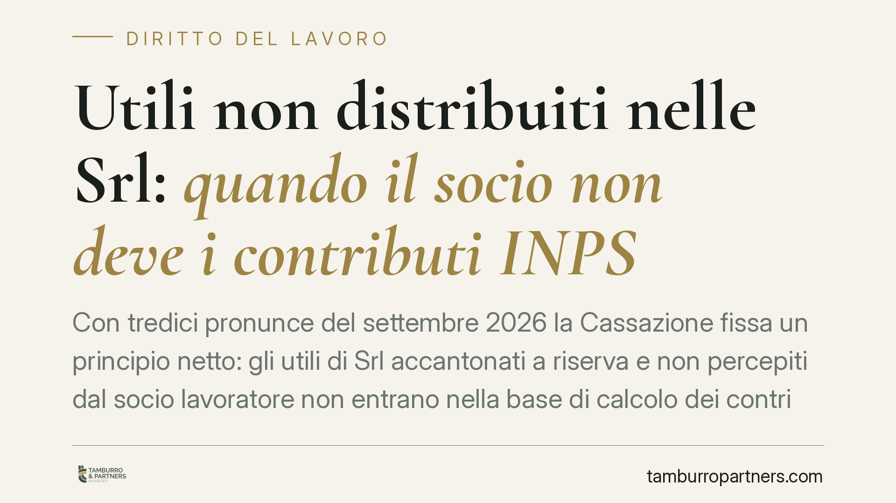

Utili non distribuiti nelle Srl: quando il socio non deve i contributi INPS
Con tredici pronunce del settembre 2026 la Cassazione fissa un principio netto: gli utili di Srl accantonati a riserva e non percepiti dal socio lavoratore non entrano nella base di calcolo dei contributi INPS a percentuale. Restano fuori il regime di trasparenza fiscale e l'obbligo sul minimale. Una svolta che incide su bilanci e strategie di distribuzione.

Il fatto
La Corte di Cassazione, Sezione Lavoro, con le sentenze nn. 25377-25630 depositate il 21 settembre 2026, ha affrontato una questione ricorrente nel contenzioso previdenziale: se il socio lavoratore di una Srl, iscritto alla gestione INPS artigiani o commercianti, debba versare i contributi a percentuale anche sugli utili che la società ha deliberato di accantonare a riserva, senza distribuirli.
La risposta è negativa. Gli utili non distribuiti e non percepiti non concorrono alla formazione del reddito d'impresa imponibile ai fini contributivi. Il principio consolida un orientamento e chiude una lunga stagione di accertamenti INPS.
Inquadramento normativo
Il riferimento è l'art. 3-bis del d.l. 19 settembre 1992, n. 384 (convertito in legge n. 438/1992), che àncora la contribuzione a percentuale per artigiani e commercianti alla "totalità dei redditi d'impresa denunciati ai fini IRPEF".
Il punto decisivo è cosa costituisca reddito d'impresa "prodotto" dal socio. Nella Srl ordinaria, la società è soggetto passivo autonomo: l'utile è tassato in capo all'ente, e diventa reddito del socio solo quando viene distribuito. Fino a quel momento resta patrimonio sociale. La Cassazione ne trae la conseguenza logica: se il reddito non è imputato né percepito dal socio, non c'è base imponibile contributiva.
Diverso è il caso della trasparenza fiscale, disciplinata dagli artt. 115 e 116 del TUIR. In questo regime opzionale il reddito della Srl viene imputato direttamente ai soci, in proporzione alle quote, a prescindere dall'effettiva distribuzione. Qui l'utile è reddito del socio per legge: la contribuzione a percentuale è dovuta anche se gli utili restano in azienda.
Implicazioni pratiche
Per il socio lavoratore di una Srl in regime ordinario cambia molto. Gli accantonamenti a riserva - scelta frequente per rafforzare il patrimonio o autofinanziare investimenti - non fanno scattare la contribuzione a percentuale. L'INPS non può pretendere contributi su ricchezza che il socio non ha incassato.
Restano però due paletti da tenere presenti.
Il primo: il contributo sul minimale è sempre dovuto. L'iscrizione alla gestione comporta un obbligo contributivo minimo annuo, indipendente dall'esistenza o distribuzione di utili. Chi svolge attività lavorativa nella società continua a versare la quota fissa.
Il secondo: la trasparenza fiscale ribalta lo scenario. Se la Srl ha optato per gli artt. 115-116 TUIR, l'utile è imputato al socio per intero, distribuito o meno, e la contribuzione a percentuale segue quella imputazione.
Sul piano del contenzioso pendente, le sentenze offrono argomenti solidi a chi ha ricevuto avvisi di addebito su utili accantonati in regime ordinario. Chi ha già pagato può valutare l'istanza di rimborso, nei limiti della prescrizione.
Cosa fare in concreto
- Verifica il regime fiscale della tua Srl. Controlla se è stata esercitata l'opzione per la trasparenza (artt. 115-116 TUIR): è il discrimine tra contribuzione dovuta e non dovuta sugli utili non distribuiti.
- Ricostruisci i verbali di destinazione dell'utile. La delibera di accantonamento a riserva è la prova documentale che l'utile non è stato percepito. Conservala e tienila ordinata per ciascun esercizio.
- Esamina gli avvisi di addebito ricevuti. Se l'INPS ha calcolato contributi a percentuale su utili accantonati in regime ordinario, valuta l'opposizione alla luce delle nuove pronunce.
- Considera l'istanza di rimborso per i versamenti effettuati. Verifica i termini di prescrizione dei contributi indebitamente versati prima di procedere.
- Pianifica in anticipo la distribuzione. La scelta tra accantonare e distribuire, e quella sul regime di trasparenza, hanno effetti previdenziali diretti: consigliamo di valutarle insieme al commercialista e a un legale prima della chiusura del bilancio.
Osservazione conclusiva
Le tredici sentenze non introducono una regola nuova, ma la fissano con chiarezza in un ambito dove l'INPS ha a lungo sostenuto la tesi opposta. Il messaggio è duplice: gli utili non incassati non generano contribuzione a percentuale, ma la scelta del regime fiscale resta determinante. La forma societaria e le opzioni tributarie producono conseguenze previdenziali che vanno governate consapevolmente.
---
*Contributo informativo a cura di Tamburro & Partners - Avv. Giuseppe Tamburro. Non costituisce parere legale.*
Ogni storia di lavoro ha i suoi tempi.
Se gestisci HR e vuoi un confronto su contenzioso, ispezioni o licenziamenti, scrivi allo studio. Ti rispondiamo entro un giorno lavorativo.